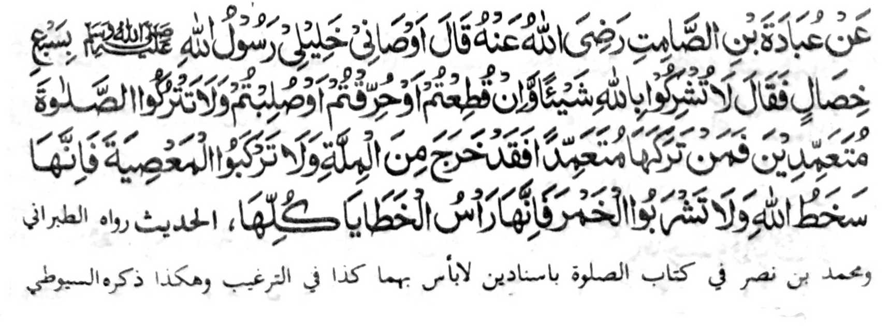

Miyaka thitayan ka Ubadah Bin Samit a pitharo iyan, "Inosiyatan ako o pekhahahaya-an aken a bolayoka aken a Rasulollah (Sallallaho 'Alaihi Wasallam) sa pito a mapiya a galebek, pitharo iyan, 'Oba niyo sakoton so Allah sa maito bo apiya pen zabo-olen kano odi na totongen kano a bibiyag odi na sola-an kano, go oba niyo bagaken so Sambayang thibaba ka sa tao a ibagak iyan thibaba na sabenar a miyakaliyo ko Agama, go oba niyo nggalebeka so dosa ka mata-an a maparoli niyo so rarangit o Allah go oba kano inom sa pakabereg ka mata-an a sekaniyan na olo o langon o manga rarata.’"
Si-i ko isa a Hadith, na so Abu Darda (Radhiallaho 'Anho) na pitharo iyan, "Tiyapa-osanako o pekhababaya-an ko a Nabi (Sallallaho 'Alaihi Wasallam) a pitharo iyan, "Obangka sakoton so Allah sa isa bo, apiya zabo-olen ka odi na totongenka odi na sola-anka; obangka bagaken thibaba so Sambayang sabap sa inibowang o Allah ko tao a thibaba-an niyan magak so Sambayang, go obaka inom sa pakabereg sabap sa giyanan i gonsi o langon o manga rarata."